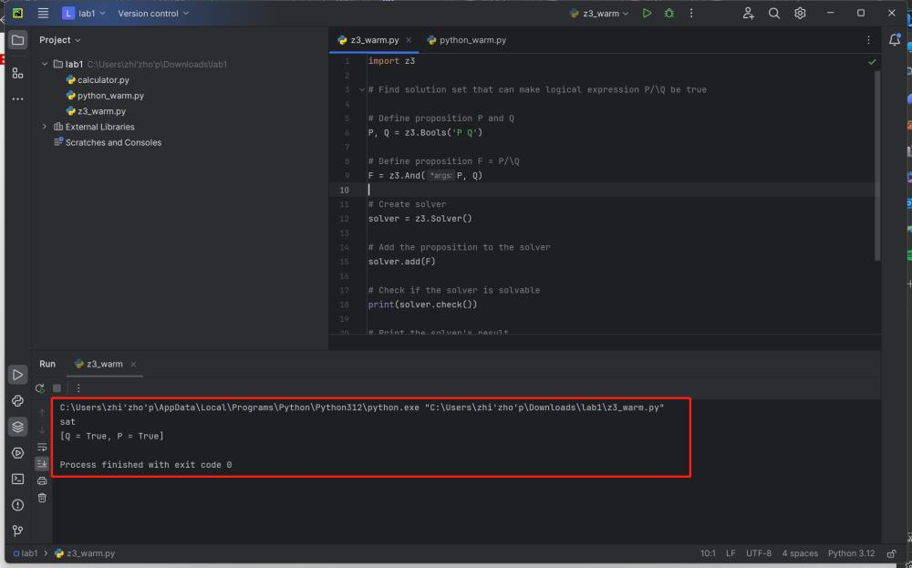

In this course, there will be (roughly) one lab per lecture. The purpose of these assignments is to familiarize you with the main course topic. One novel point is that all these assignments will be finished in a mechanized way, that is, you will finish them using some tools. The tools used in this course are Python, Z3, etc.
This is the first lab, in Part A, you are required to install all the necessary tools and software, and have some ideas of how they work and how to use them. In Part B, you're going to solve several problems as a Python warming up. Some problems are tagged with Exercise, which you should solve. And one problem is tagged with Challenge, which is optional. Download this code template to start with. For any problems, feel free to ask the TAs for help.
When you finished the lab, zip you code files (exclude .venv and other temporary folder) with file name <ID>-lab-1.zip (e.g., SA19225789-lab-1.zip), and submit it to USTC Online Teaching Platform. Any late submission will NOT be accepted.
In this part, you'll install all the necessary tools and software, and have some ideas of how they work and how to use them.
In this course, we recommend you to use the Python as main (we'll be using the Python binding to send out the assignments. Of course, there are other bindings for Z3, say OCaml or .Net bindings, if you want to use these bindings, talk to the TAs in advance). You can download Python installation package from official site. We recommend Python 3.12.0 or higher version, but if you want to manage multiple versions of Python, try pyenv or anaconda.
tips: if you are using Windows, please remember add your Python binary to the PATH environment. The figure below demonstrates what you should do at installation time:
PyCharm is one popular Python IDE, it can effectively manage your Python development environment. You can download PyCharm from the official website. you can use the community edition for free or register an account with your USTC email to get education-free license for professional edition.
After the PyCharm has installed, you can start Python project by open the given code template folder:
Z3 is a theorem prover/solver from Microsoft Research. In this course, you'll solve SAT & SMT problems using Z3, and also you will have the opportunity to solve many realistic problems using Z3: say, program verification, symbolic execution, reversing engineering from information security, and so on. For more information about Z3, you can check its project homepage.
The Z3Py package is the Z3 API in Python (Z3 also has APIs for C, .Net, and OCaml). The next steps show you how to install Z3Py package on PyCharm project:
Python is a widely used programming language and is easy to learn and use. Given that most of our assignments are composed in Python, it is recommended to allocate some time for familiarizing yourself with the language if you haven't already. the basic syntax or the Python tutorial.
This and the future assignments will use AST (abstract syntax tree) to encode formal languages. To let you get familiarized yourself with the creation and operations on AST.In this part, you'll implement a very simple arithmetic calculator in Python.
The syntax for the calculator language is described by the following context-free grammar (CFG):
exp ::= num
| exp + exp
| exp - exp
| exp * exp
| exp / exp
| (exp)
The expressions generated from the CFG above can be represented by trees. For instance, the expression 3 * 4 + 10 / 2 to AST like:
+
/ \
/ \
* /
/ \ / \
/ \ / \
3 4 10 2
Based on the AST data structures, we can implement various computations on the AST. One special and important operation you'll be building is an interpreter. Simply speaking, an interpreter reads in some program as input, and output its result. Consider again the example 3 * 4 + 10 / 2, the interpreter will output 17>.
To make sure you have installed Z3 correctly, we provide a simple test case for you to test your installation. View this simple logical proposition. And we want to get the solution that make it satisfiable (i.e., let it be True):
P /\ Q
If Z3 is installed correctly, z3_test.py will run without any error and the output should look like:
After finished the lab, don't forget zip you code files with file name <ID>-lab-1.zip (e.g., SA19225789-lab-1.zip), and submit it to USTC Online Teaching Platform.